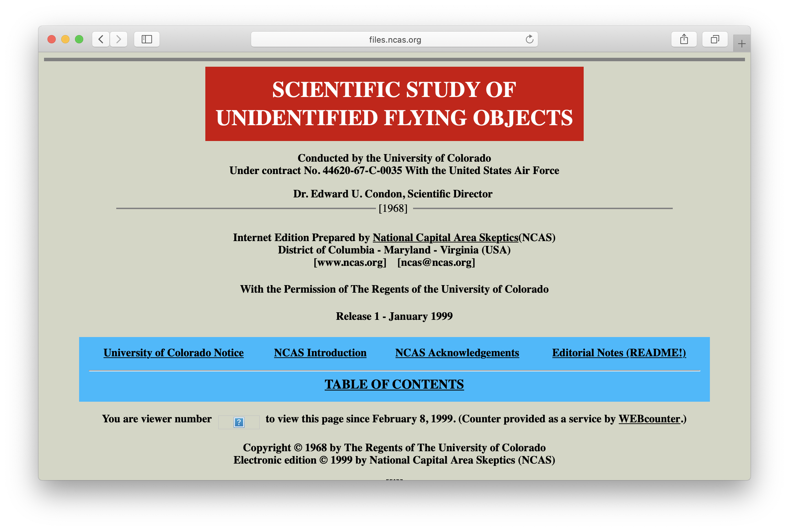

Websites consist of multiple Webpages linked together. Like a Feedcontent isn't consumed linearly like with the other selected mediums.
| Length | Variable |
| Experience | Non-linear, Segmented |
| Realm | Physical, Digital |
| Example |
The Condon Report

|
My website is a shifting house next to a river of knowledge. What could yours be?
by Laurel Schwulst The Creative Independent
Today more than ever, we need individuals rather than corporations to guide the web’s future. The web is called the web because its vitality depends on just that—an interconnected web of individual nodes breathing life into a vast network. This web needs to actually work for people instead of being powered by a small handful of big corporations—like Facebook/Instagram, Twitter, and Google.
Individuals can steer the web back to its original architecture simply by having a website. I think artists, in particular, could be instrumental in this space—showing the world where the web can go.
Artists excel at creating worlds. They do this first for themselves and then, when they share their work, for others. Of course, world-building means creating everything—not only making things inside the world and also the surrounding world itself—the language, style, rules, and architecture.
This is why websites are so important. They allow the author to create not only works (the “objects”) but also the world (the rooms, the arrangement of rooms, the architecture!). Ideally, the two would inform each other in a virtuous, self-perfecting loop. This can be incredibly nurturing to an artist’s practice.
To those creative people who say “I don’t need a website,” I ask: why not have a personal website that works strategically, in parallel to your other activities? How could a website complement what you already do rather than competing or repeating? How can you make it fun or thought-provoking or (insert desired feeling here) for you? How can the process of making and cultivating a website contribute to your approach?
A website can be anything. It doesn’t (and probably shouldn’t) be an archive of your complete works. That’s going to be dead the moment you publish. A website, or anything interactive, is inherently unfinished. It’s imperfect—maybe sometimes it even has a few bugs. But that’s the beauty of it. Websites are living, temporal spaces. What happens to websites after death, anyway?